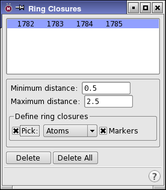

| Using | Features | Links |
The Ring Closures panel allows ring-opening locations for MacroModel MCMM and SPMC conformational searches to be specified.
To open this panel, choose Ring Closures from the Search variables option menu in the CSearch tab of the Conformational Search panel and click Edit.
During a Monte Carlo-based conformational search (MCMM or SPMC) it is necessary to break rings open before varying their torsions. Then, after random torsion variations have been evaluated, the ring must be re-closed. The appropriate location for ring closures must be defined before a calculation can be started. "Ring Closures" consist of four atoms that define the bond to be broken (and then re-closed) during a MCMM or SPMC step.
The simplest way to create ring closures is to click the Perform Automatic Setup button in the Conformational Search panel. MacroModel makes reasonable decisions about where a ring should be opened. The list of atoms in the ring that will be opened appears in the text box at the top of the Ring Closures panel. Each ring closure is defined by four atoms. The opening is made between the second and third atoms. If Markers is selected, the ring closure is marked by a light green line, which is broken between the second and third atoms. A lightning bolt is also placed between the second and third atoms to show where the opening will be made.

This list shows the sets of four atoms that define the ring closures to use in the calculations. You can select a line in the list to display or delete.
If you clicked Perform Automatic Setup in the Conformational Search panel, this list contains the results of the setup when you open the panel.
The minimum acceptable distance between the second and third ring closure atoms must be specified. If the distance between the ring closure atoms is less than this minimum distance, then the ring is reopened and a different set of random variations is performed. The default value is 0.5 Å, which should suffice for most searches.
This text box allows a value to be specified for the maximum acceptable distance between the second and third atoms of a re-closed ring. If the distance between the ring closure atoms is greater than this maximum distance, the ring is reopened and a different set of random variations is performed. The default value is 2.5 Å, which should suffice for most searches.
To manually define the location of a ring opening, define the ring closure by picking four atoms with the standard picking controls in this section. The actual bond breakage occurs between the second and third picked atoms. The first and fourth atoms should also be in the ring. As the first three atoms are picked, a purple box is placed around them. Once the fourth atom is picked, a new entry is displayed in the list.
A ring closure can be redefined by picking new atoms while the closure is selected in the list.
If this option is selected, the four selected atoms are marked with a light green line. The line is solid between the first and second atoms and the third and fourth atoms. To indicate where the ring closure will occur, Maestro places a broken line and a lightning bolt between the second and third atoms. To distinguish the currently selected closure, a solid line is placed on either side of the broken one.
To delete a defined ring closure, select it by clicking on it in the list, or re-pick the atoms that define it, then click Delete.
To delete all the defined ring closures, click this button.